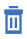

Setting up the calendar
Use the Calendar Settings page to manage the appearance of calendar events.
This task requires that you are an UrbanCode Velocity administrator.
Use the Calendar Settings page to add, remove, and set the presentation style such as color for events displayed in the calendar. You can define presentation order of events for days with multiple event types. Events types include the following.
- Release events and activities
- Financial blackouts, maintenance windows, release opportunities
- Holidays
The Preview portion of the page displays all the defined events.
- To access the User authentication settings page, click the Settings icon (
 ) at the top right of the user interface. Click Calendar.
) at the top right of the user interface. Click Calendar. - To create an event, click Add event type for the type of event to be added. There is an Add event type for each event type. Type the name of the event and click the check mark icon.
- To change the presentation style and color, place the cursor over the default style created and right-mouse click. Optionally, click the edit icon ( ).
- Use the left and right arrow to set the priority for the event. The left arrow moves the event up and the right arrow moves it down.
- To remove an event, move the cursor to the event and click the delete icon ().
- To modify an event, move the cursor to the event and click the edit icon (). There are separate edit icons for changing the event name and presentation style.
Parent topic: Administration